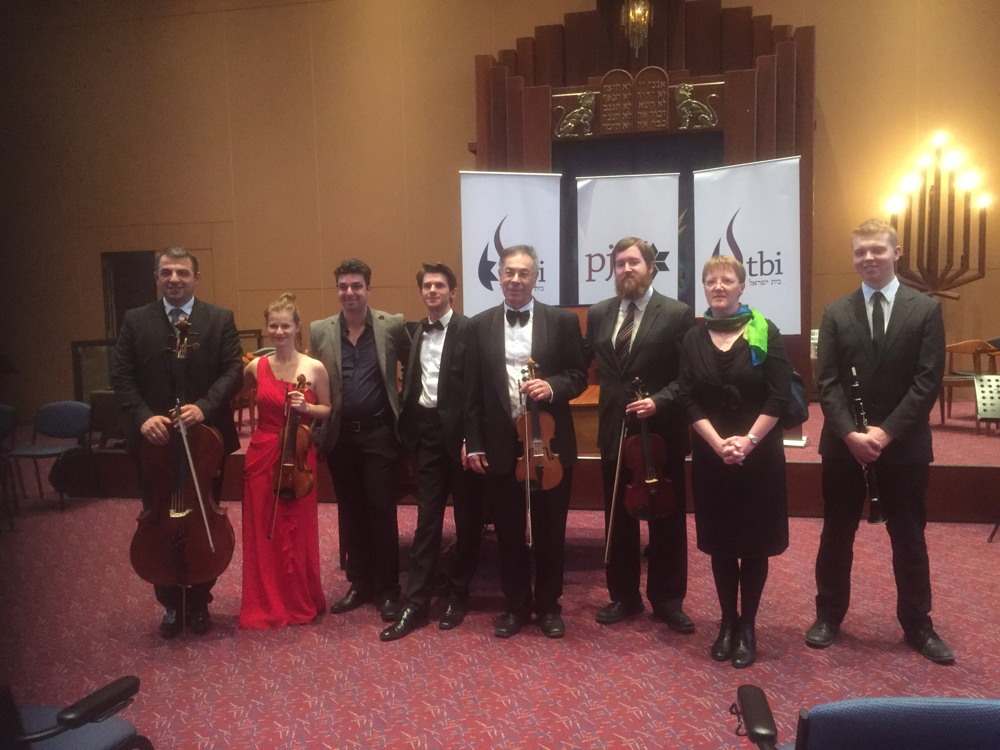
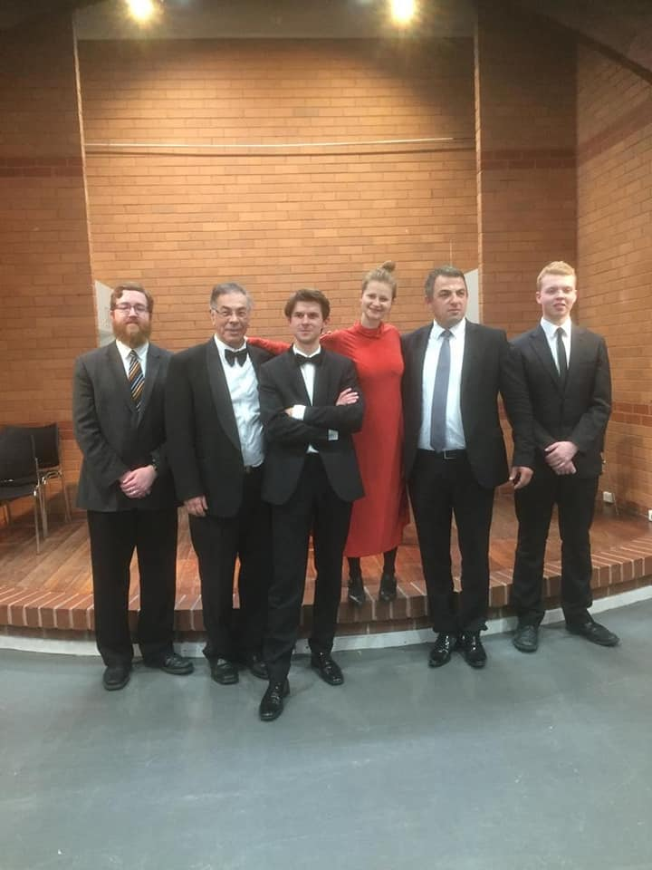
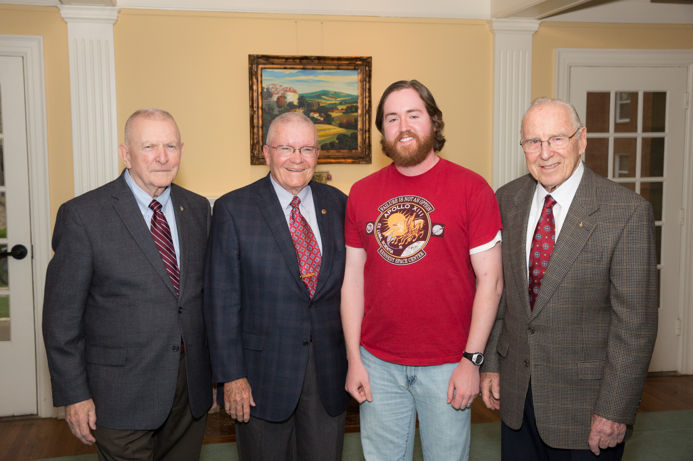
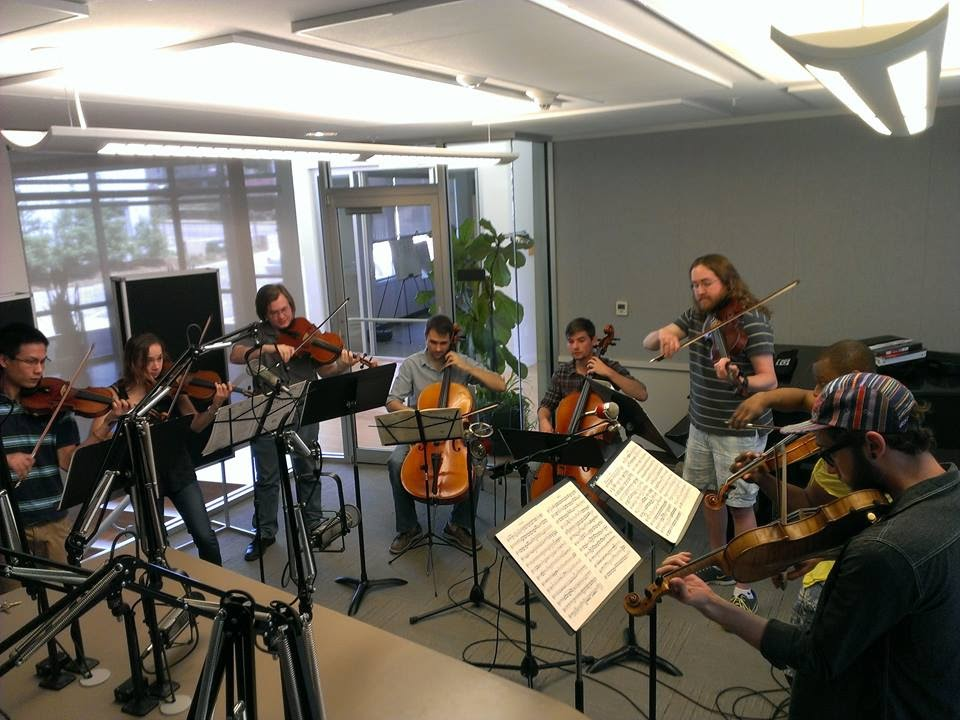
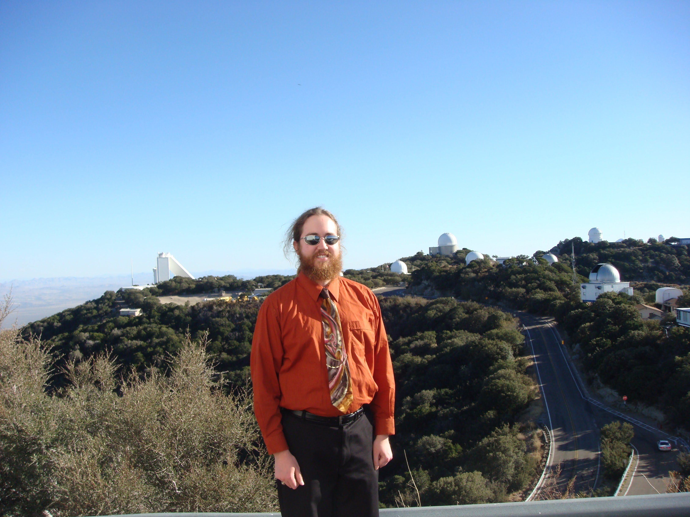
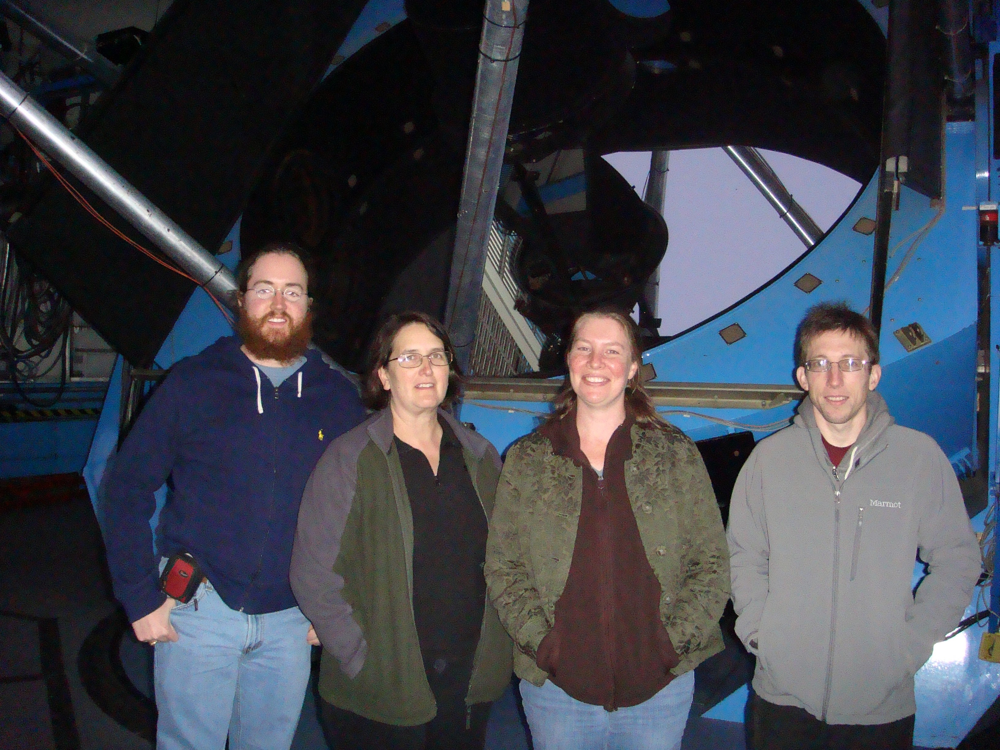

In the News
Jump to a Year
BACK TO TOP
2020 Masonic Lodge Golf Tournament (August 22, 2020)
Clipping from the Galena Sentinel-Times , Wednesday, September 2, 2020 edition.
BACK TO TOP
BACK TO TOP

I was the invited speaker for the Melbourne Chamber Orchestra's "Beethoven Gala Dinner," October 10, 2019, at the Sofitel Melbourne On Collins.
BACK TO TOP
The Yachad Chamber Orchestra is the first orchestra created specifically to unite German and Israeli musicians. It was...
Posted by German Embassy Australia on Monday, August 19, 2019

Following the September 1, 2019 concert at Temple Beth Israel. From left to right: Lev Gordin, Liv Migdal, Alon Trigger, Roman Salyutov, Ron Jontof-Hutter, Ben Davis, a representative from the German Embassy Australia, and Alex Chapman.

Following the September 8, 2019 concert at the Betty Day Centre. From left to right: Ben Davis, Ron Jontof-Hutter, Roman Salyutov, Liv Migdal, Lev Gordin, and Alex Chapman.
Concert Program (for both concerts)
BACK TO TOP
Miller et al. (2019)
AAS 234 Press Conference: Spiral Galaxies Near & Far (featuring Miller et al. 2019)
AAS Nova — Press Conference: Spiral Galaxies Near and Far (by Susanna Kohler)
University of Arkansas News — Research on Disk Galaxies Sheds Light on Movement of Stars
BACK TO TOP
BACK TO TOP
Davis et al. (2017)
- Self-authored Media
- July 2017, Swinburne Media Release: "Spiral Arms Allow School Children to Weigh Black Holes"
- UK Version (MNRAS): "Spiral Arms Allow School Children to Weigh Black Holes"
- Australasian Science: "How You Can Weigh Weigh Black Holes"
- English Press
- PHYS.ORG, IFL Science, Gizmodo, Science Daily, AZO Quantum, COSMOS Magazine, Space Daily, ineffableisland.com, MS-CHAT.COM, Across the Universe, AlphaGalileo, Health Medicine Network, EurekAlert, sciencesprings, & Astro Watch.
- Non-English Press
- Greek1, Greek2, Greek3, Italian1, Italian2, Italian3, German, Dutch1, Dutch2, Dutch3, Czech, Polish, Spanish, Portuguese, Vietnamese1, Vietnamese2, Vietnamese3, Vietnamese4, Vietnamese5, Indonesian, & Japanese.
- Radio

BACK TO TOP
Pour-Imani et al. (2016)
- Press
BACK TO TOP
Gods Amongst the Trees (April 5, 2016)

From left to right: Ryan Cockerham, Katy Henriksen, Jennine Wager, Miroslava Panayotova, Lia Uribe, Er-Gene Kahng, and Ben Davis.
BACK TO TOP
"KUAF 91.3 FM NPR - Of Note for Friday, August 28, 2015: Worker's Union Ensemble to Play at Nightbird Books"

From left to right: Ben Davis, Ryan Cockerham, Er-Gene Kahng, and Larry Rubin.
Workers, Unite @ Nightbird Books
BACK TO TOP
The Galena Sentinel Times: "Out of this World" by David Nelson (2015)

Pictured here with my doctoral advisor, Dr. Julia Kennefick.
BACK TO TOP
The Galena Sentinel Times: "Davis Receives His Doctorate of Philosophy" by David Nelson (2015)

Apollo 13 astronauts (Fred Haise & Jim Lovell) and flight director (Gene Kranz), 45 years and 6 days after splashdown of the Odyssey. From the left to right: Gene Kranz, Fred Haise, Ben Davis, and Jim Lovell (April 23, 2015).
BACK TO TOP
The Seven Last Words of Christ (Good Friday, April 3, 2015)

BACK TO TOP
KUAF 91.3 FM NPR - Of Note with Katy Henriksen: "Four Violins, Two Violas and Two Cellos Inside the Firmin-Garner Performance Studio" (April 30, 2014)

From the left, moving clockwise: Andrew Chu, Catalina Barraza, Andrew Thompson, Patrick Bellah, Ronald Juzeler, Ben Davis, Brice Smith, and Baron Lyle.
BACK TO TOP
University of Arkansas News: "Physicists Awarded Telescope Time at Kitt Peak National Observatory" (2013)



Top: Kitt Peak National Observatory. Middle: Ben Davis, Julia Kennefick, Amanda Schilling, and Scott Barrows in front of the WIYN 3.5m telescope. Bottom: WIYN 3.5m control room.
BACK TO TOP
University of Arkansas News: "Winners Announced for From Abstract to Contract: Graduate Student Research Competition" (2012)

From left to right: Chancellor Gearhart, Ben Davis, Jim Rankin, and Provost Gaber.
BACK TO TOPHOME